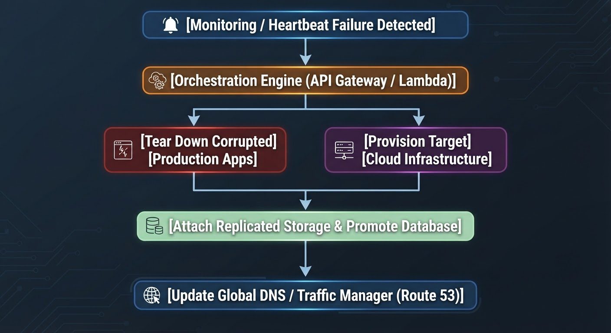

February 2, 2026
10 min read
Zero-Touch Failover: Moving Beyond Manual Runbooks to Fully Orchestrated API-Driven Recovery
Executive Translation & The Technical View
Modern enterprise infrastructure rarely resides within a single physical data center or a self-hosted private cloud. Organizations rely heavily on Software-as-a-Service (SaaS) and Managed Service Providers (MSPs) for core business functions, customer relationship management, and enterprise resource planning.
Traditional disaster recovery relies on binders containing hundreds of pages of manual instructions. When a data center experiences an outage or a ransomware event, system administrators scramble to execute steps in sequence under extreme pressure.
The Technical View:
Manual runbooks suffer from human error, outdated documentation, and high Mean Time to Recovery (MTTR). Zero-touch failover replaces human intervention with programmatic, API-driven orchestration engines that execute complex recovery dependency graphs automatically.
Leadership Translation:
Manual recovery introduces unpredictable downtime. Automating failover guarantees deterministic RTOs, transforming disaster recovery from an error-prone fire drill into a predictable, software-defined execution pipeline.
Architecture and Operational Mechanics
Implementing zero-touch failover requires defining your infrastructure as code (IaC) and utilizing orchestration platforms (such as HashiCorp Terraform, Ansible, or specialized DR orchestration tools like Zerto) to trigger automated workflows.

Dependency Mapping:
Catalog every application tier, database cluster, and load balancer dependency. The orchestration engine must spin up infrastructure in strict precedence order (e.g., Active Directory and Core Storage first, followed by database engines, followed by stateless application nodes).
Automated Health Validation
After each resource is provisioned and storage is mounted via API calls, automated health checks validate service responsiveness before promoting DNS records.
Failback Automation
Zero-touch architecture must also account for failback, ensuring that once the primary site is cleansed, workloads can be synchronized and returned with minimal data loss.
Actionable Implementation Steps
Convert all legacy disaster recovery runbooks into version-controlled automated scripts (Python or PowerShell) integrated into your CI/CD deployment pipeline.
Schedule automated, non-disruptive DR drills every quarter where orchestration scripts execute in an isolated sandbox environment.
Implement strict API token security and multi-factor authorization safeguards to prevent accidental or malicious triggering of automated disaster recovery workflows.